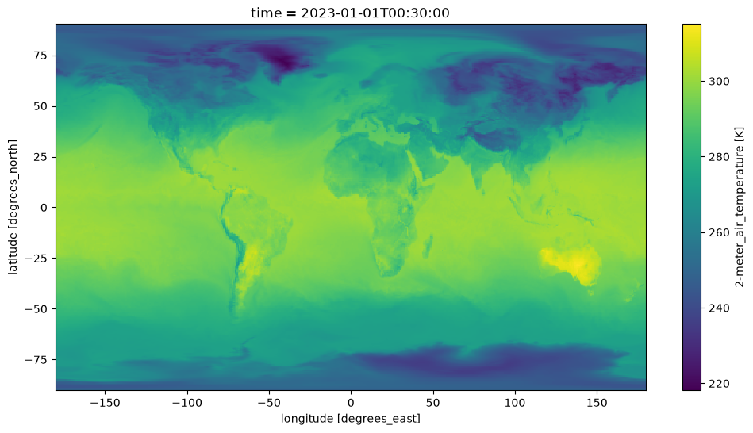
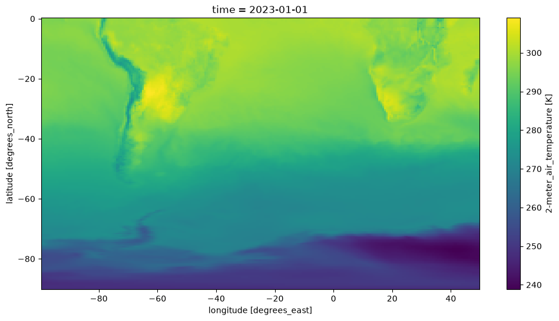

Acceso a datos MERRA-2 mediante OPeNDAP de NASA Earthdata en la nube#
Requisitos para ejecutar este notebook
Tener una cuenta Earth Data Login
Método preferido de autenticación.
python>=3.12
Objetivos
Usar buenas prácticas de OPeNDAP, pydap y xarray para:
Descubrir todas las URLs OPeNDAP asociadas con una colección MERRA-2.
Autenticarse mediante EDL (basado en token)
Explorar la colección MERRA-2 y filtrar variables
Consolidar metadatos a nivel de colección
Descargar/transmitir un subconjunto de interés.
Autor: Miguel Jimenez-Urias, ‘25
import xarray as xr
import datetime as dt
import earthaccess
import matplotlib.pyplot as plt
import numpy as np
import pydap
from pydap.net import create_session
from pydap.client import get_cmr_urls, consolidate_metadata, open_url
print("xarray version: ", xr.__version__)
print("pydap version: ", pydap.__version__)
xarray version: 2026.4.0
pydap version: 3.5.11.dev1+ge35cae66d
Explorar la colección MERRA-2#
merra2_doi = "10.5067/VJAFPLI1CSIV" # available e.g. GES DISC MERRA-2 documentation
# https://disc.gsfc.nasa.gov/datasets/M2T1NXSLV_5.12.4/summary?keywords=MERRA-2
# One month of data
time_range=[dt.datetime(2023, 1, 1), dt.datetime(2023, 2, 28)]
urls = get_cmr_urls(doi=merra2_doi,time_range=time_range, limit=100) # you can increase the limit of results
len(urls)
59
Autenticación EDL mediante earthaccess y OPeNDAP#
Puedes autenticarte mediante earthaccess como se muestra a continuacion. Debes tener una cuenta EDL válida. Hay dos estrategias para autenticarte con earthaccess:
strategy="interactive". Esto pedirá tu usuario y contraseña de EDL.strategy="netrc". Usa esta opción si el notebook se ejecuta en un entorno donde se puede recuperar un.netrccon tus credenciales.
A continuación, el valor predeterminado será netrc, asumiendo que el usuario ejecutó el notebook Authenticate.ipynb. Si no es así, puedes cambiar la estrategia a "interactive".
from earthaccess.exceptions import LoginStrategyUnavailable
try:
auth = earthaccess.login(strategy="netrc", persist=True) # you will be promted to add your EDL credentials
except LoginStrategyUnavailable:
auth = earthaccess.login(strategy="interactive", persist=True)
# pass Token Authorization to a new Session.
my_session = create_session(auth.get_session())
Explorar variables en la colección y filtrar para conservar solo las deseadas#
Hacemos esto especificando que el servidor OPeNDAP de NASA procese solicitudes mediante el protocolo DAP4.
Hay dos formas de hacerlo:
Usar
pydappara inspeccionar los metadatos (todas las variables dentro de los archivos y su descripción). Puedes ejecutar el siguiente código para listar todos los nombres de variables.
from pydap.client import open_url
ds = open_url(url, protocol='dap4', session=my_session)
ds.tree() # this will display the entire tree directory
ds[Varname].attributes # will display all the information about Varname in the remote file.
Usar el Data Request Form de OPeNDAP visible desde el navegador. Lo logras tomando una URL OPeNDAP, agregando la extensión
.dmry pegando la URL resultante en un navegador.
De cualquiera de las dos formas, puedes inspeccionar nombres de variables y sus descripciones sin descargar arreglos grandes.
Abajo asumimos que sabes qué variables necesitas.
variables = ['lon', 'lat', 'time', 'T2M', "U2M", "V2M"] # variables of interest
CE = "?dap4.ce="+ "/"+";/".join(variables) # Need to add this string as a query expression to the OPeNDAP URL
new_urls = [url.replace("https", "dap4") + CE for url in urls] #
Explorar un archivo remoto individual#
Crearemos un dataset de Xarray con fines de visualización, y haremos un gráfico de temperatura cerca de la superficie, en una sola unidad de tiempo.
%%time
ds = xr.open_dataset(
new_urls[0],
engine='pydap',
session=my_session,
)
ds
CPU times: user 323 ms, sys: 52.2 ms, total: 375 ms
Wall time: 4.46 s
<xarray.Dataset> Size: 120MB
Dimensions: (time: 24, lat: 361, lon: 576)
Coordinates:
* time (time) datetime64[ns] 192B 2023-01-01T00:30:00 ... 2023-01-01T23...
* lat (lat) float64 3kB -90.0 -89.5 -89.0 -88.5 ... 88.5 89.0 89.5 90.0
* lon (lon) float64 5kB -180.0 -179.4 -178.8 -178.1 ... 178.1 178.8 179.4
Data variables:
T2M (time, lat, lon) float64 40MB ...
U2M (time, lat, lon) float64 40MB ...
V2M (time, lat, lon) float64 40MB ...
Attributes: (12/30)
History: Original file generated: Wed Jan 11 21...
Comment: GMAO filename: d5124_m2_jan10.tavg1_2d...
Filename: MERRA2_400.tavg1_2d_slv_Nx.20230101.nc4
Conventions: CF-1
Institution: NASA Global Modeling and Assimilation ...
References: http://gmao.gsfc.nasa.gov
... ...
Contact: http://gmao.gsfc.nasa.gov
identifier_product_doi: 10.5067/VJAFPLI1CSIV
RangeBeginningDate: 2023-01-01
RangeBeginningTime: 00:00:00.000000
RangeEndingDate: 2023-01-01
RangeEndingTime: 23:59:59.000000Visualizar#
En Xarray, al visualizar datos, los datos se descargan. Al fragmentar en time al crear el dataset, aseguramos que, en el momento de visualizar una sola unidad de tiempo en xarray, el rebanado temporal se pase al servidor. Esto reduce la cantidad de datos descargados y acelera la transferencia.
fig, ax = plt.subplots(figsize=(12, 6))
ds['T2M'].isel(time=0).plot();

Subdividir el dataset agregado mientras se remuestrea en el tiempo#
Seleccionamos datos relevantes para el hemisferio sur, en el área cercana a Sudamérica.
Almacenamos datos en promedios diarios (a diferencia de datos horarios).
Note
Para lograrlo, necesitamos identificar el rebanado en espacio de índices y aplicar chunk the dataset antes de transmitir. Hacerlo asegurará que el subconjunto espacial se realice del lado del servidor (OPeNDAP), cerca de los datos, mientras Xarray calcula el promedio diario.
Crear agregación de Dataset, fragmentando en el espacio#
%%time
# spatial subset around South America
lat, lon = ds['lat'].data, ds['lon'].data
minLon, maxLon = -100, 50
iLon = np.where((lon>minLon)&(lon < maxLon))[0]
iLat= np.where(lat < 0)[0]
# Make sure subset is done by server
expected_download = {'lon':len(iLon), 'lat': len(iLat)}
ds = xr.open_mfdataset(
new_urls,
engine='pydap',
session=my_session,
concat_dim='time',
combine='nested',
parallel=True,
chunks=expected_download, #### <<<<<<<------- Muy importante
)
ds
CPU times: user 9.27 s, sys: 1.34 s, total: 10.6 s
Wall time: 31.7 s
<xarray.Dataset> Size: 7GB
Dimensions: (time: 1416, lat: 361, lon: 576)
Coordinates:
* time (time) datetime64[ns] 11kB 2023-01-01T00:30:00 ... 2023-02-28T23...
* lat (lat) float64 3kB -90.0 -89.5 -89.0 -88.5 ... 88.5 89.0 89.5 90.0
* lon (lon) float64 5kB -180.0 -179.4 -178.8 -178.1 ... 178.1 178.8 179.4
Data variables:
T2M (time, lat, lon) float64 2GB dask.array<chunksize=(24, 181, 239), meta=np.ndarray>
U2M (time, lat, lon) float64 2GB dask.array<chunksize=(24, 181, 239), meta=np.ndarray>
V2M (time, lat, lon) float64 2GB dask.array<chunksize=(24, 181, 239), meta=np.ndarray>
Attributes: (12/30)
History: Original file generated: Wed Jan 11 21...
Comment: GMAO filename: d5124_m2_jan10.tavg1_2d...
Filename: MERRA2_400.tavg1_2d_slv_Nx.20230101.nc4
Conventions: CF-1
Institution: NASA Global Modeling and Assimilation ...
References: http://gmao.gsfc.nasa.gov
... ...
Contact: http://gmao.gsfc.nasa.gov
identifier_product_doi: 10.5067/VJAFPLI1CSIV
RangeBeginningDate: 2023-01-01
RangeBeginningTime: 00:00:00.000000
RangeEndingDate: 2023-01-01
RangeEndingTime: 23:59:59.000000Remuestrear y subdividir#
Todas las operaciones en la celda siguiente son perezosas, es decir, se retrasan y no activan cómputo.
## now subset the Xarray Dataset and rechunk so it is a single chunk
ds = ds.isel(lon=slice(iLon[0], iLon[-1]+1), lat=slice(iLat[0], iLat[-1]+1))
# take daily average and store locally
nds = ds.resample(time="1D").mean()
Descargar#
Almacenar los archivos no solo activará la descarga de los datos, sino también cualquier cómputo diferido anterior, como el remuestreo.
%%time
nds.to_netcdf("data/Merra2_subset.nc4", mode='w')
CPU times: user 44.6 s, sys: 13.4 s, total: 58 s
Wall time: 2min
Veamos los datos#
mds = xr.open_dataset("data/Merra2_subset.nc4")
mds
<xarray.Dataset> Size: 61MB
Dimensions: (time: 59, lat: 181, lon: 239)
Coordinates:
* time (time) datetime64[ns] 472B 2023-01-01 2023-01-02 ... 2023-02-28
* lat (lat) float64 1kB -90.0 -89.5 -89.0 -88.5 ... -1.0 -0.5 -1.798e-13
* lon (lon) float64 2kB -99.38 -98.75 -98.12 -97.5 ... 48.12 48.75 49.38
Data variables:
T2M (time, lat, lon) float64 20MB ...
U2M (time, lat, lon) float64 20MB ...
V2M (time, lat, lon) float64 20MB ...
Attributes: (12/30)
History: Original file generated: Wed Jan 11 21...
Comment: GMAO filename: d5124_m2_jan10.tavg1_2d...
Filename: MERRA2_400.tavg1_2d_slv_Nx.20230101.nc4
Conventions: CF-1
Institution: NASA Global Modeling and Assimilation ...
References: http://gmao.gsfc.nasa.gov
... ...
Contact: http://gmao.gsfc.nasa.gov
identifier_product_doi: 10.5067/VJAFPLI1CSIV
RangeBeginningDate: 2023-01-01
RangeBeginningTime: 00:00:00.000000
RangeEndingDate: 2023-01-01
RangeEndingTime: 23:59:59.000000fig, ax = plt.subplots(figsize=(12, 6))
mds['T2M'].isel(time=0).plot();
